Un siècle de plans
Les archives du cabinet remontent au début du XXe siècle. Elles rassemblent les anciens dossiers, plans, croquis, calculs, documents de bornage, divisions et relevés topographiques établis à Mantes-la-Jolie et à Limay depuis 1922.
Ce n’est pas une collection : c’est un outil de travail. Quand une borne a disparu, quand un acte renvoie à un « plan de M. Grelaud », quand une limite est contestée trente ans après, c’est dans ce fonds que se trouve la réponse.
Ce que ça change pour vous
Du temps gagné. Si le terrain a déjà été borné par le cabinet ou par l’un de nos prédécesseurs, la limite est déjà fixée. Il ne reste qu’à rétablir les bornes à partir du dossier — opération bien plus rapide et moins coûteuse qu’un bornage complet.
De la sécurité. Un plan ancien, un procès-verbal signé, un croquis de reconnaissance : ce sont des pièces qui pèsent, devant un voisin comme devant un tribunal.
Une continuité. Chaque dossier que nous établissons aujourd’hui entre dans ce même fonds, et servira à son tour.
Les géomètres-experts qui nous ont précédés
Le fonds s'est constitué par successions de cabinets, à Mantes-la-Jolie et à Limay. Chacun a laissé ses plans.
- M. Camille LOUCHARDArchives de 1922 à 1936Le plus ancien fonds conservé : registres de bornage et plans manuscrits.
- M. Frédéric GRELAUDGéomètre-expert à Mantes-la-Jolie de 1937 à 1974Bornages, divisions et nivellements sur l’ensemble du Mantois.
- M. J.-F. MOURETGéomètre-expert à Limay jusqu’en 1982Le fonds du bureau de Limay.
- M. A. CHAPRON — Géo-constructionGéomètre-expert à Mantes-la-Jolie, jusqu’en 1995Archives partielles.
- M. Jean-Pierre ABELLOGéomètre-expert à Mantes-la-Jolie de 1975 à 2013Prédécesseur direct du cabinet actuel.
- M. Olivier ABELLOGéomètre-expert, aujourd’huiMantes-la-Jolie et Limay.
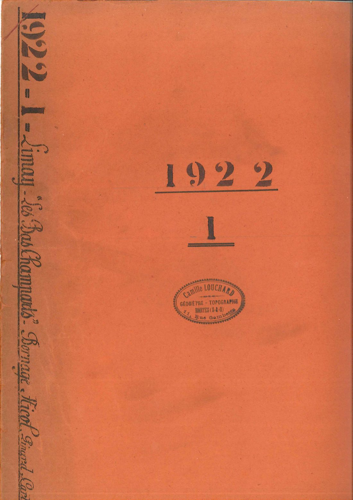
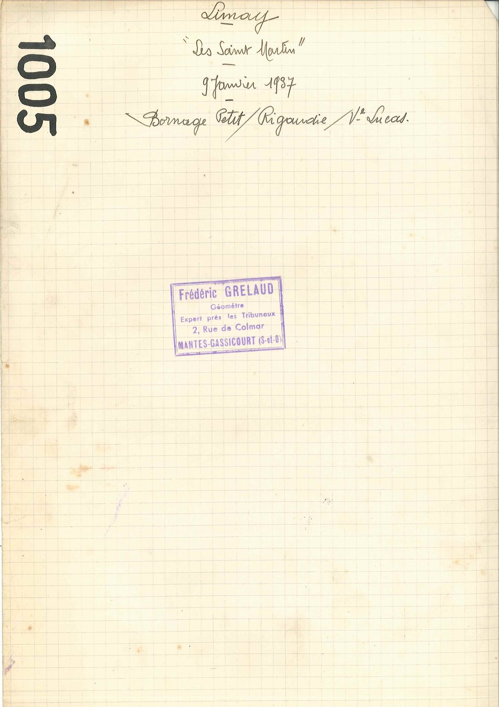
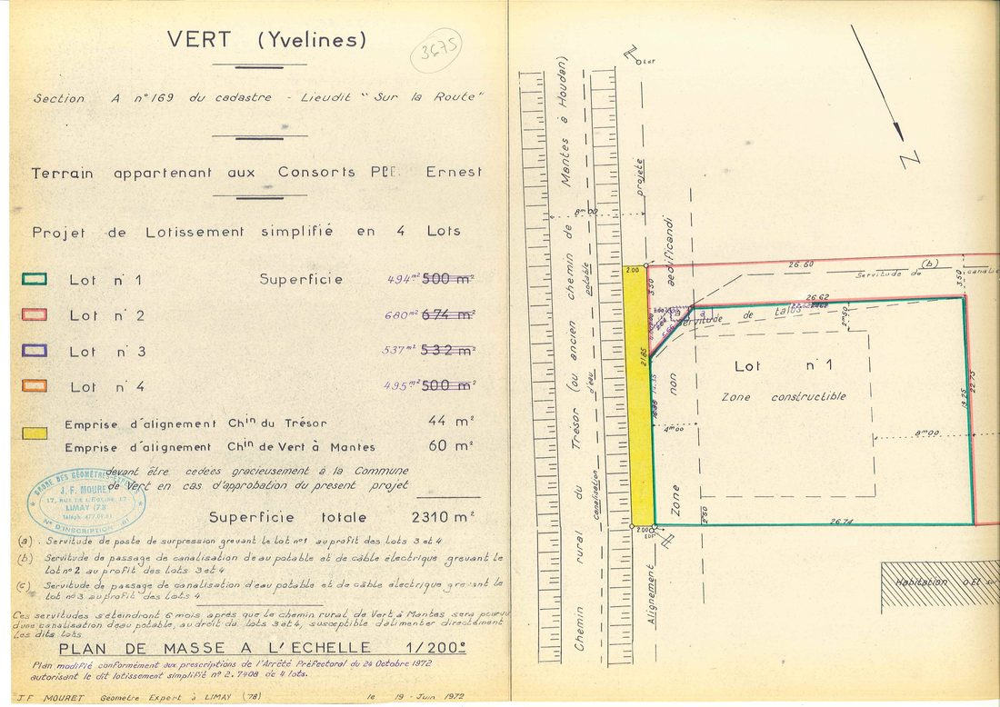
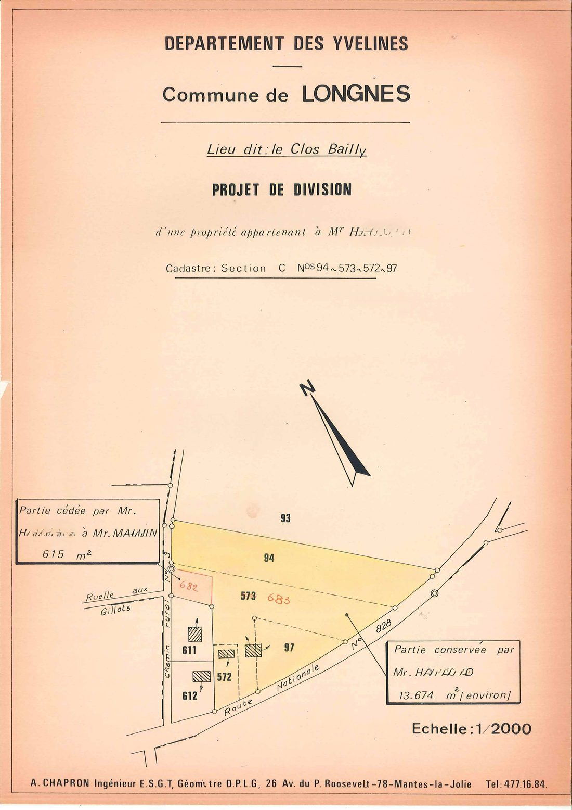
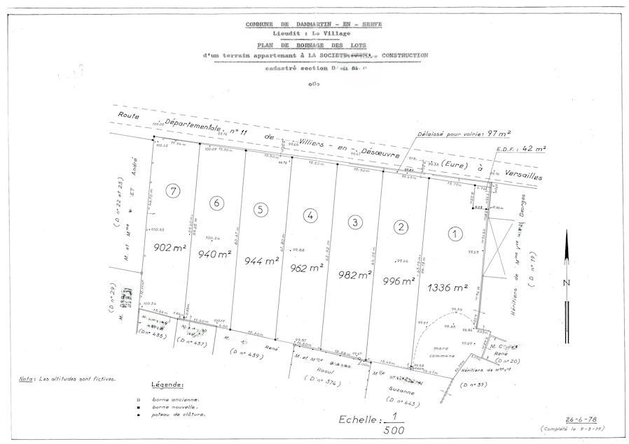
Dans les cartons
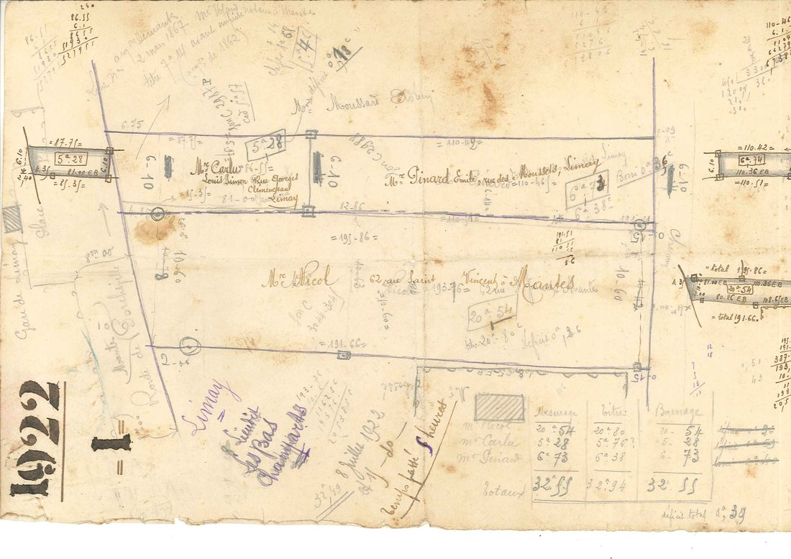
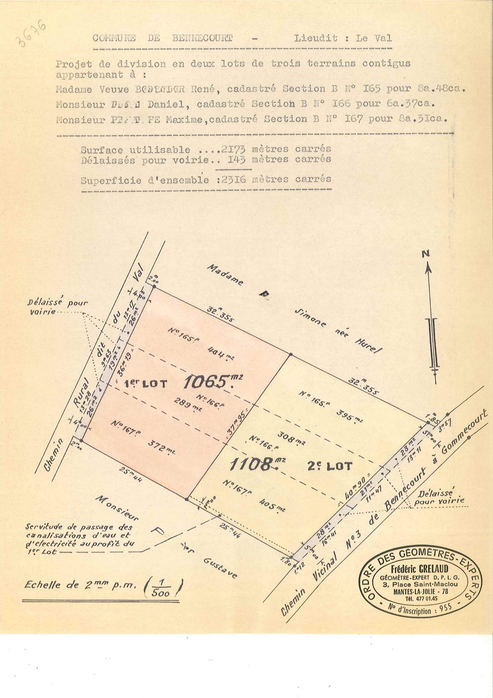
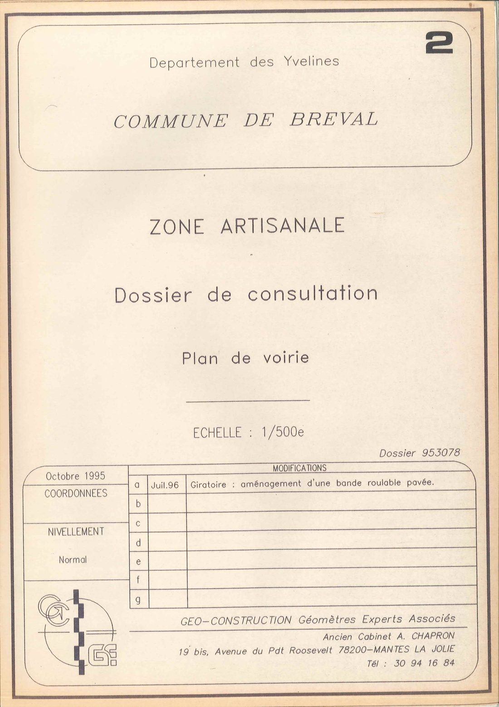
Pièces choisies
Quelques documents sortis des cartons. Elles donnent la mesure de ce que le fonds contient — et de ce qu'il permet de retrouver.
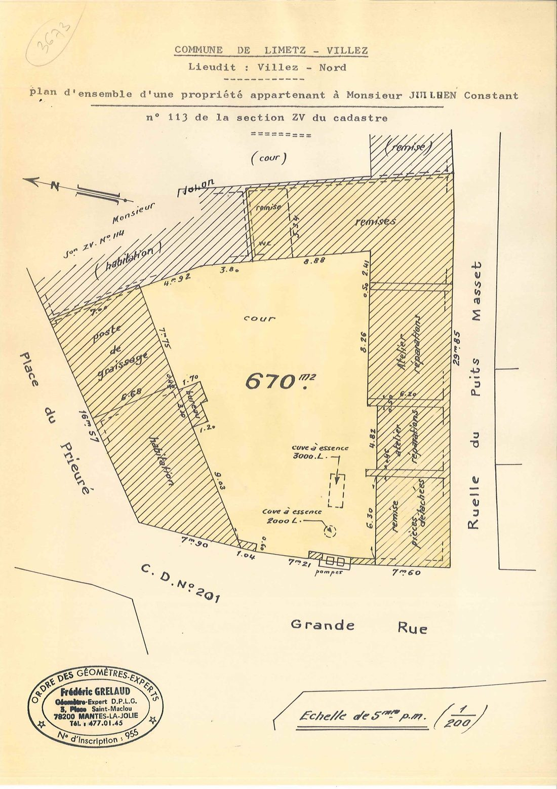
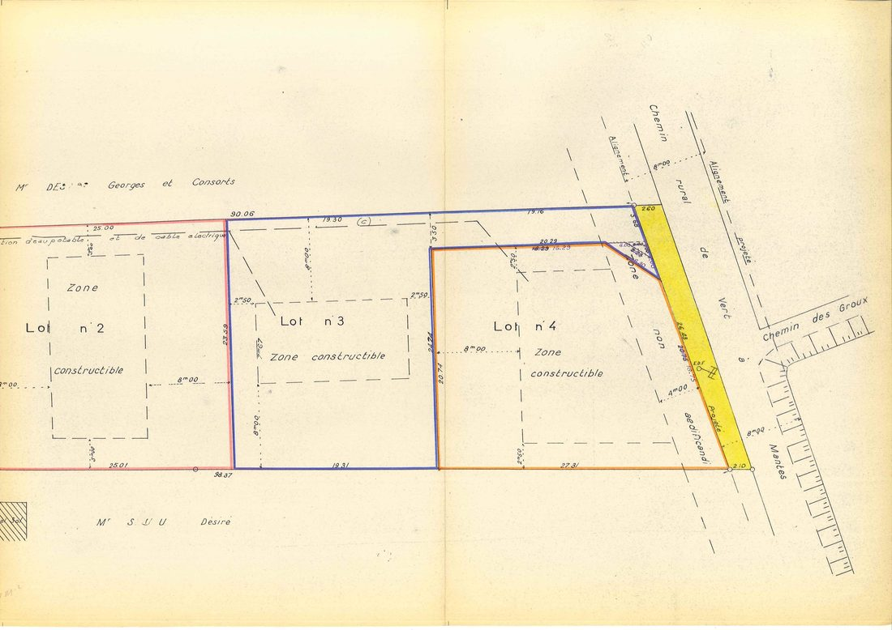
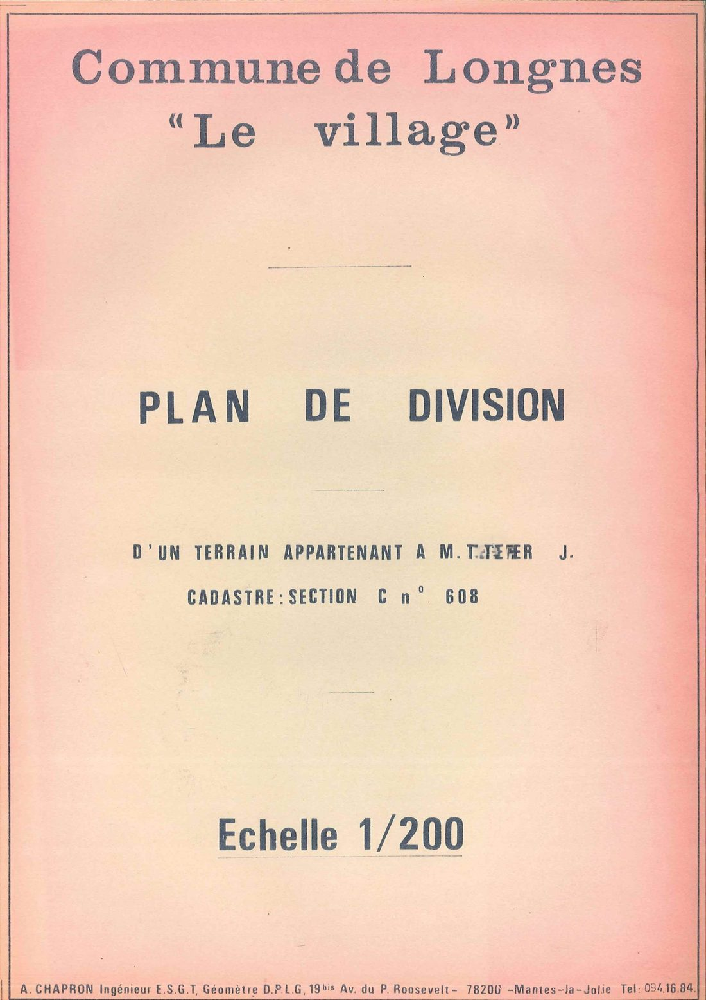
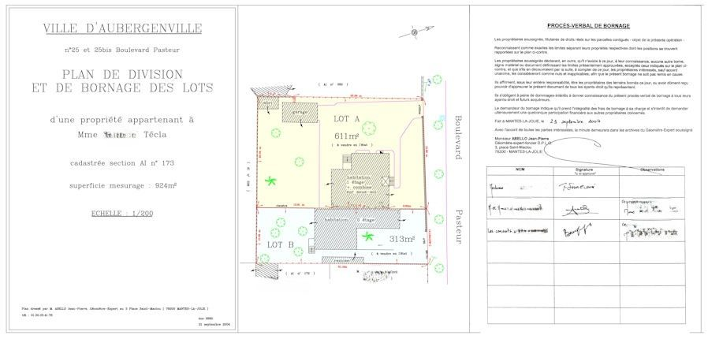
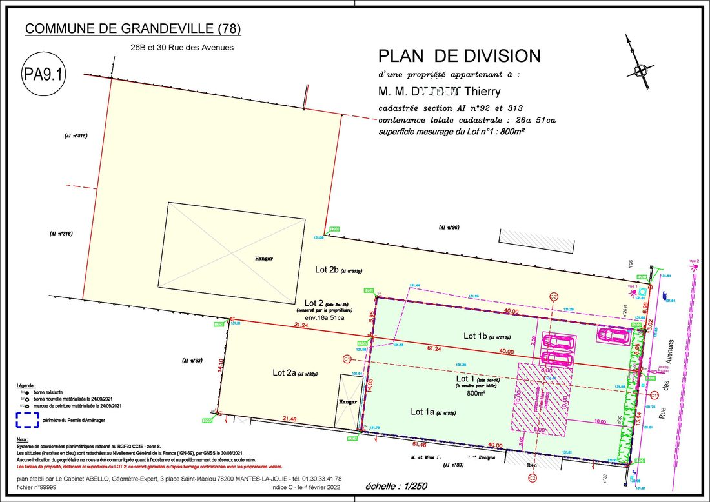
Protection des données. Les plans reproduits sur cette page ont été préparés pour la publication : sur les documents postérieurs à 1950, les noms des propriétaires ont été caviardés ou modifiés, ainsi que certaines mentions permettant d'identifier un bien. Les documents les plus anciens, dont les personnes citées sont décédées depuis longtemps, sont reproduits tels quels. La consultation d'un dossier d'archives se fait par ailleurs dans le cadre d'une mission, et reste soumise au secret professionnel.
Les communes couvertes
Nos archives concernent principalement les communes suivantes des Yvelines et de leurs abords. La liste n’est pas limitative : un dossier peut exister ailleurs.
- Andelu
- Arnouville-lès-Mantes
- Aubergenville
- Auffreville-Brasseuil
- Aulnay-sur-Mauldre
- Bazainville
- Bazemont
- Béhoust
- Bennecourt
- Beynes
- Blaru
- Boinville-en-Mantois
- Boinvilliers
- Boissy-Mauvoisin
- Bonnières-sur-Seine
- Bouafle
- Breuil-Bois-Robert
- Bréval
- Brueil-en-Vexin
- Buchelay
- Chaufour-lès-Bonnières
- Courgent
- Cravent
- Dammartin-en-Serve
- Drocourt
- Ecquevilly
- Épône
- Favrieux
- Flacourt
- Flins-Neuve-Église
- Flins-sur-Seine
- Follainville-Dennemont
- Fontenay-Mauvoisin
- Fontenay-Saint-Père
- Freneuse
- Gaillon-sur-Montcient
- Galluis
- Gargenville
- Gommecourt
- Goupillières
- Goussonville
- Guernes
- Guerville
- Guitrancourt
- Guyancourt
- Hardricourt
- Hargeville
- Herbeville
- Issou
- Jambville
- Jeufosse
- Jouy-Mauvoisin
- Jumeauville
- Juziers
- La Falaise
- La Villeneuve-en-Chevrie
- Lainville-en-Vexin
- Les Mureaux
- Limay
- Limetz-Villez
- Lommoye
- Longnes
- Magnanville
- Mantes-la-Jolie
- Mantes-la-Ville
- Mareil-sur-Mauldre
- Maule
- Ménerville
- Méricourt
- Meulan-en-Yvelines
- Mézières-sur-Seine
- Mézy-sur-Seine
- Moisson
- Mondreville
- Montainville
- Montalet-le-Bois
- Montchauvet
- Montigny-le-Bretonneux
- Morainvilliers
- Mousseaux-sur-Seine
- Mulcent
- Neauphle-le-Château
- Neauphlette
- Nézel
- Oinville-sur-Montcient
- Orgerus
- Orvilliers
- Osmoy
- Perdreauville
- Porcheville
- Port-Villez
- Prunay-le-Temple
- Rolleboise
- Rosay
- Rosny-sur-Seine
- Sailly
- Saint-Illiers-la-Ville
- Saint-Illiers-le-Bois
- Saint-Martin-la-Garenne
- Septeuil
- Soindres
- Tacoignières
- Tessancourt-sur-Aubette
- Tilly
- Triel-sur-Seine
- Vaux-sur-Seine
- Verneuil-sur-Seine
- Vernouillet
- Vert
Les questions qu’on nous pose
Comment savoir si mon terrain a déjà été borné ?
Trois pistes : votre acte de propriété, qui mentionne souvent un procès-verbal de bornage ; nos archives, si le terrain se situe sur l’une des communes couvertes ; et le portail Géofoncier, où les géomètres-experts publient leurs opérations de délimitation. Nous faisons cette vérification avant tout devis de bornage.
Une recherche d’archives est-elle facturée ?
Oui. La recherche dans le fonds, l’extraction d’un dossier ancien, sa lecture et son analyse représentent un travail : ils font l’objet d’un devis, comme toute autre mission.
En revanche, lorsque nous sommes déjà chargés d’un dossier sur le terrain concerné, la vérification de l’existence d’une archive fait partie de l’étude préalable.
Puis-je obtenir la copie d’un plan établi par un de vos prédécesseurs ?
Oui, si vous êtes concerné par le document — propriétaire actuel du bien, notaire chargé de la vente, ou partie à l’opération. Les archives d’un géomètre-expert ne sont pas des archives publiques : elles restent couvertes par le secret professionnel.
Mais soyez prévenu : obtenir le plan est la partie facile. Le savoir lire en est une autre. Un plan ancien se comprend au regard des conventions de son époque, de l’instrument qui l’a produit, du titre qu’il accompagnait et de ce que le terrain est devenu depuis. Mal interprété, il induit en erreur plus sûrement qu’il ne renseigne — et il ne vaut pas limite à lui seul.
Seule l’opération de bornage, contradictoire et signée, fixe la limite. L’archive éclaire, elle ne tranche pas.
Vos archives remplacent-elles les Archives départementales ?
Non, elles s’y ajoutent. Nos archives sont techniques — plans, calculs, croquis. Les Archives départementales des Yvelines conservent notamment le cadastre napoléonien et les archives notariales, consultables en ligne. Nous consultons les deux quand le dossier l’exige.